1Qué puede hacer cada rol
| Gerente | Líder | |
|---|---|---|
| Pantalla al entrar | Confronta | Casos |
| Confronta (tablero) | Solo su sucursal, solo lectura | Todas las sucursales |
| Casos | — | Revisar, aprobar, rechazar, comentar y crear casos |
| PIN de autorización | — | Sí, válido en cualquier sucursal |
| Firma en salidas | Firma presencial en salidas de 11 o más placas | — |
2Tablero de Confronta
La Confronta compara lo que se escaneó en cada salida contra lo que pedía la IF en NetSuite, y resume la exactitud del surtido.
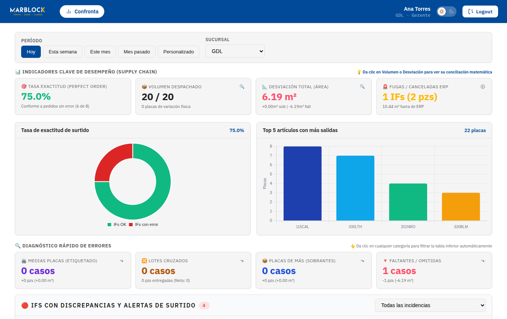
2.1 Filtros
- Período: Hoy, Esta semana, Este mes, Mes pasado o Personalizado (rango de fechas).
- Sucursal: el gerente solo ve la suya; el líder puede elegir cualquiera o todas.
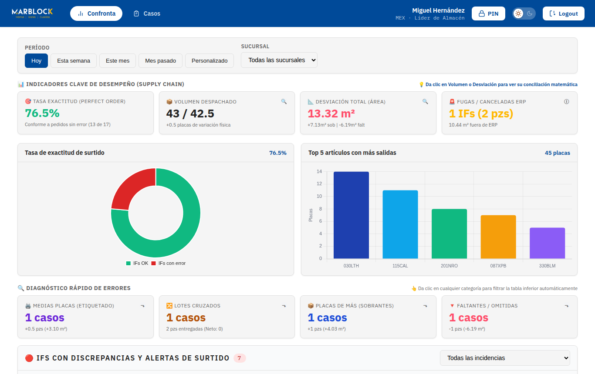
3Indicadores (KPIs) y qué significan
| Indicador | Qué mide | Cómo leerlo |
|---|---|---|
| 🎯 Tasa exactitud (Perfect Order) | % de IFs surtidas sin ningún error. | “75% · 6 de 8” = 2 IFs tuvieron algún error. Meta: lo más cerca de 100%. |
| 📦 Volumen despachado | Placas escaneadas / placas esperadas. | Clic para ver la conciliación (desglose matemático por IF). |
| 📐 Desviación total (área) | m² de diferencia: sobrantes y faltantes. | Clic para ver su conciliación. Rojo = hay diferencia. |
| 🚨 Fugas / Canceladas ERP | IFs surtidas físicamente pero canceladas o no encontradas en NetSuite. | Material que salió sin respaldo en el ERP. Requiere atención inmediata. |
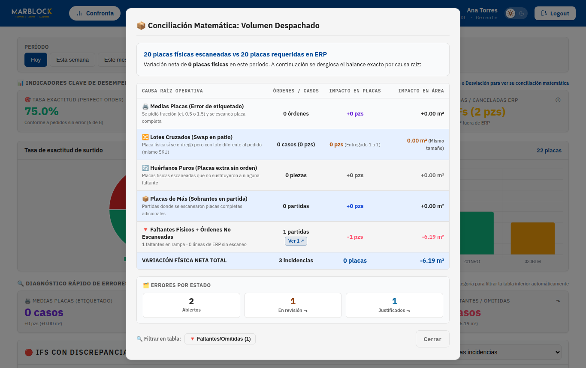
3.1 Gráficas
- Tasa de exactitud de surtido: IFs OK (verde) contra IFs con error (rojo).
- Top 5 artículos con más salidas: SKUs con más placas despachadas en el período.
3.2 Diagnóstico rápido de errores
Cuatro tarjetas cuentan los errores por categoría. Dar clic en una tarjeta filtra la tabla de incidencias:
- 🖨️ Medias placas (etiquetado) – la IF pedía fracción y se escaneó placa completa.
- 🔀 Lotes cruzados – mismo material, lote distinto.
- 📦 Placas de más (sobrantes).
- 🔻 Faltantes / omitidas.
4Tabla de incidencias y detalle de IF
IFs con discrepancias y alertas de surtido lista cada IF con problemas: folio, fecha, SO, ubicación, número de incidencias, semáforo, causas y el botón Ver detalle.
| Semáforo | Significa |
|---|---|
| 🚨 Alerta ERP | IF cancelada o inexistente en NetSuite (posible fuga). |
| Solo hubo lotes cruzados (material correcto, lote distinto). | |
| 🔴 Error Surtido | Faltantes, sobrantes, huérfanas, línea omitida u otros. |
En Causas también aparece el estado de la justificación:
- Justificado · folio – el caso fue aprobado por el líder.
- – el jefe ya lo justificó y espera aprobación.
- Sin etiqueta – el jefe aún no lo justifica.
Dar clic en la etiqueta con folio abre el caso en el Gestor de Casos (solo líder).
El selector Todas las incidencias filtra por tipo, incluidos 🔵 Justificados y 🟡 En revisión.
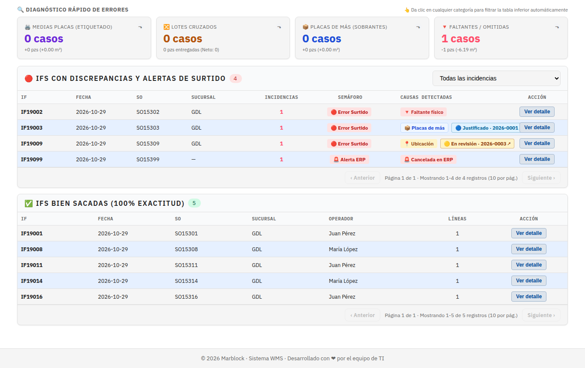
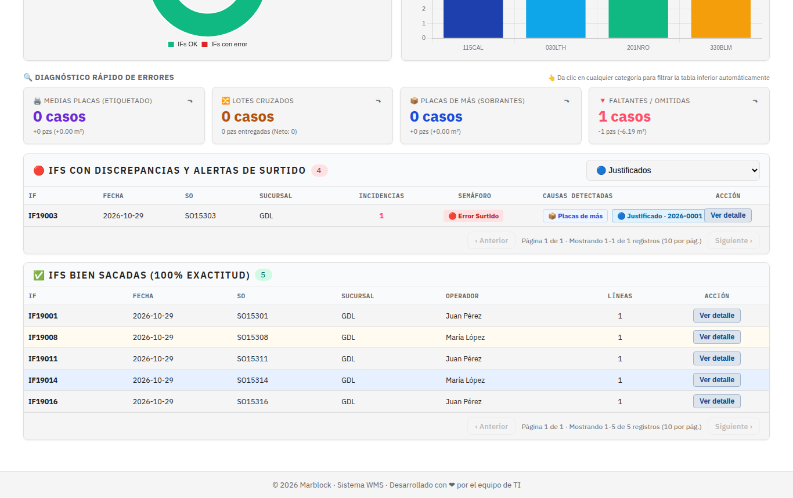
4.1 Ver detalle
Muestra las líneas esperadas contra las escaneadas, las diferencias, quién surtió y autorizó, la justificación (si existe) y un plan de acción sugerido.
Al final del tablero, IFs bien sacadas lista las salidas sin ningún error.
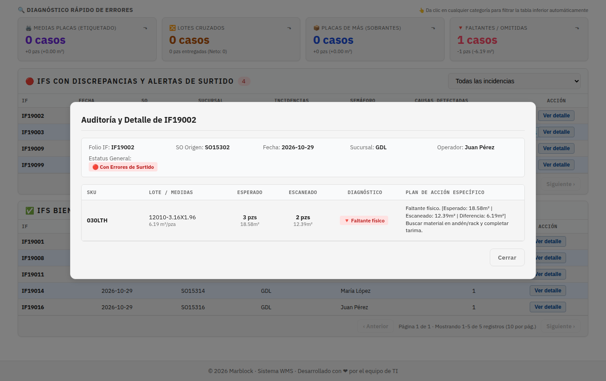
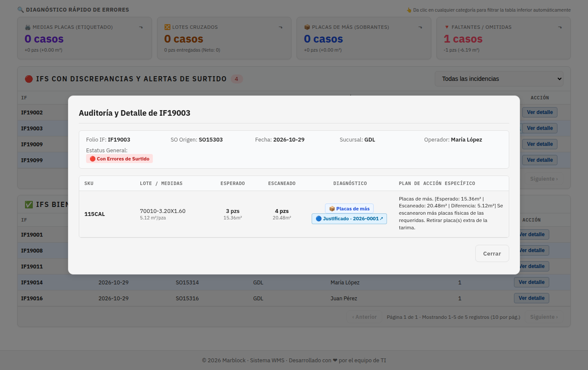
5Líder: Gestor de Casos
El líder entra directo a Casos, que tiene tres pestañas:
| Pestaña | Contenido |
|---|---|
| Por crear | Errores de todas las sucursales que aún no tienen caso. El líder también puede seleccionarlos y crear un caso (igual que el jefe). |
| Creados | Casos pendientes de aprobación. Aquí está el trabajo diario del líder. |
| Historial | Casos ya aprobados o rechazados. |
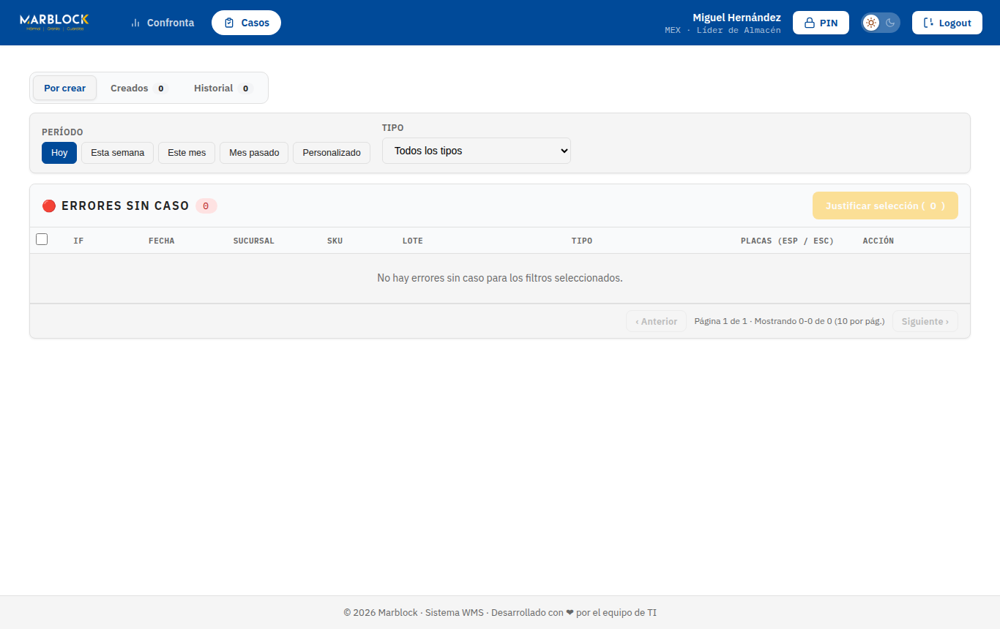
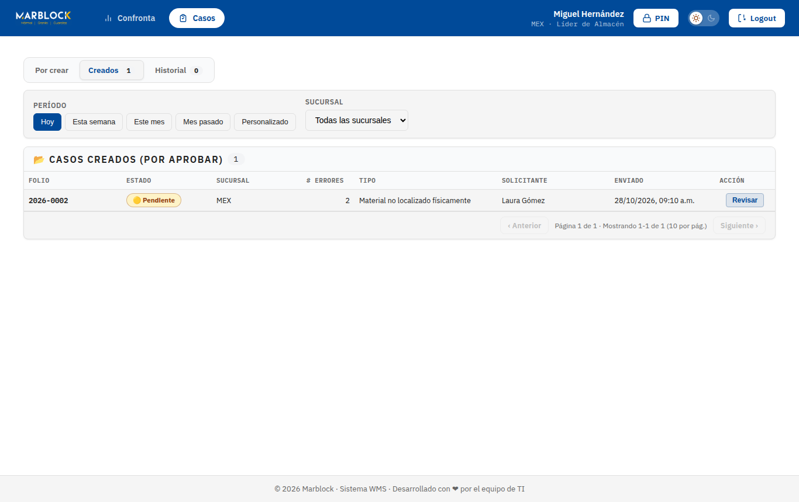
6Líder: aprobar o rechazar un caso
- En Creados, toca Revisar.
- Lee el tipo de justificación, el texto, el solicitante y cada error del caso (IF, tipo, lote, esperadas/escaneadas).
- Revisa la Actividad del caso (creación, reenvíos, comentarios). Si necesitas información, escribe un comentario y toca Comentar.
- Decide: ✅ Aprobar o ⛔ Rechazar.
- Opcionalmente agrega un comentario al aprobar; al rechazar el comentario es obligatorio (explica qué falta para que el jefe corrija).
- Confirma. Verás “Caso aprobado” o “Caso rechazado”.
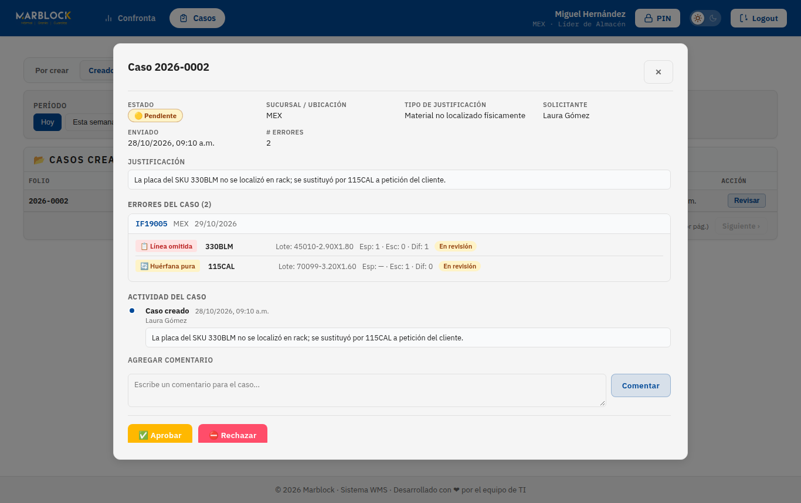
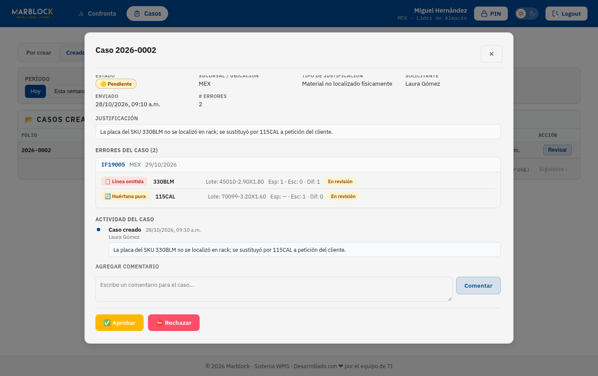
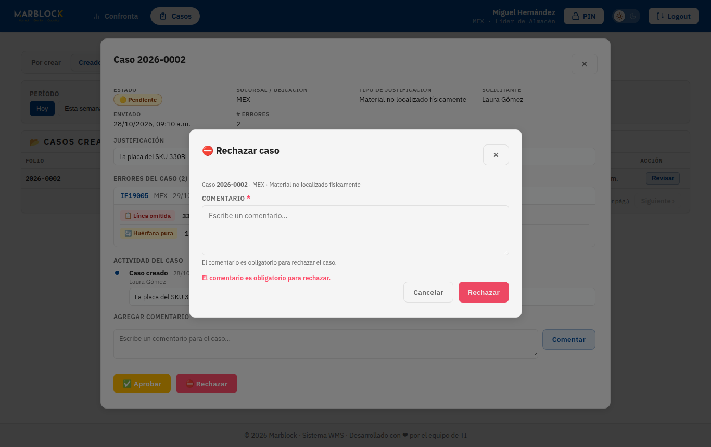
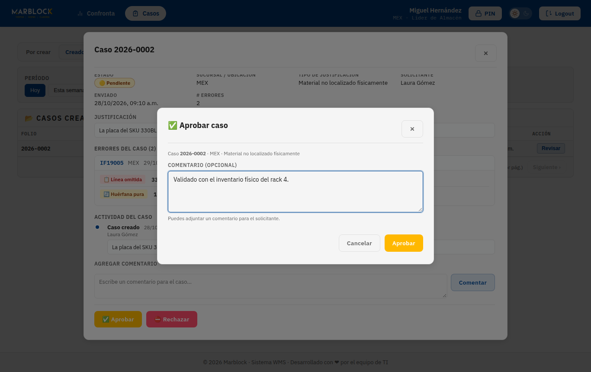
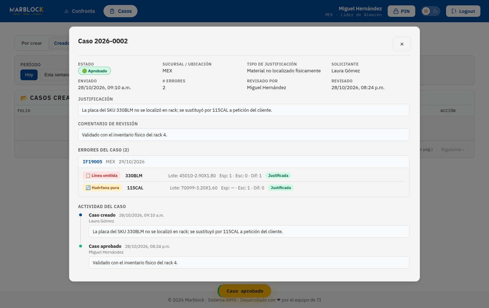
6.1 Qué pasa después
- Aprobado: los errores quedan Justificados y en la Confronta se ven con la etiqueta azul “Justificado · folio”.
- Rechazado: regresa al jefe con tu comentario; él puede editar y reenviar o retirar errores. Si reenvía, vuelve a aparecer en Creados.
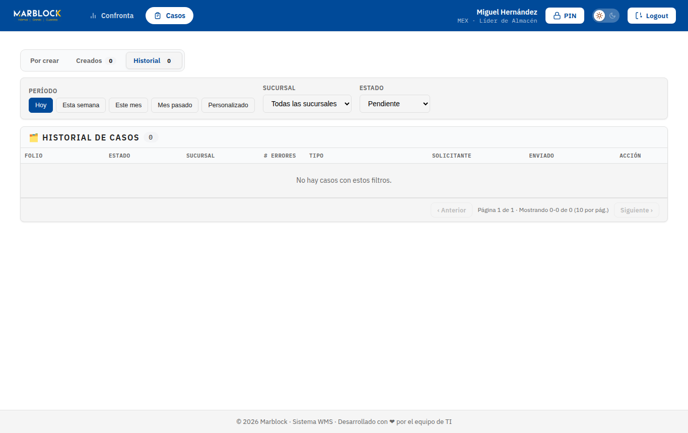
7Líder: PIN y firmas
El líder tiene botón 🔒 PIN en el encabezado y su PIN autoriza diferencias de confronta en cualquier sucursal. Para configurarlo: contraseña actual, nuevo PIN (4 a 6 números), confirmación y Guardar PIN (detalle en el Manual del Jefe de Almacén, sección 2).
Gerente: en salidas de 11 o más placas (o grupos Multi-IF que sumen 11 o más) el escáner pide tu firma presencial en el celular del auxiliar, después de la del jefe de almacén.
8Mensajes y errores
| Mensaje | Significa / qué hacer |
|---|---|
| ✅ Sin incidencias ni alertas en este período | Todo se surtió bien en las fechas elegidas. |
| El comentario es obligatorio para rechazar. | Escribe el motivo del rechazo. |
| Escribe un comentario antes de enviarlo | Comentario vacío. |
| Error cargando sucursales | Problema de conexión; recarga la página. |
| Error: … | El servidor rechazó la acción (por ejemplo, el caso ya fue resuelto por otra persona). Recarga y revisa. |
| Sesión expirada | La sesión dura 24 horas; vuelve a iniciar sesión. |
9Glosario
- IF
- Item Fulfillment de NetSuite: la orden de salida de placas.
- Confronta
- Comparación entre lo escaneado y lo esperado por la IF.
- Perfect Order
- IF surtida sin ningún error.
- Fuga
- Material que salió físicamente pero cuya IF está cancelada o no existe en NetSuite.
- Lote cruzado
- Mismo SKU entregado con un lote distinto al pedido.
- Huérfana pura
- Placa escaneada cuyo SKU/lote no estaba en la IF.
- Línea omitida
- Línea de la IF sin ninguna placa escaneada.
- Caso
- Agrupación de errores con una justificación, creada por el jefe y aprobada/rechazada por el líder.
- Estados del caso
- Pendiente de aprobación → Aprobado / Rechazado.
- Estados del error
- Abierta → En revisión → Justificada.
- Multi-IF
- Salida de varias IFs juntas con una sola ronda de firmas; los umbrales de firma se calculan con el total del grupo.